Arcane Ascent Roguelike Deckbuilder - Word Games (2024) (C# Unity)
Steam link: https://store.steampowered.com/app/3205630/Arcane_Ascent


I developed an MVP (Minimum Viable Product) deck-building game inspired by "Slay the Spire" as Unity Gamedev.
Key Project Contributions (Unity Gamedev):
- Architected and implemented a data-driven card combat and item system utilizing ScriptableObjects for scalable design.
- Engineered the core gameplay logic for 90+ unique cards, relic behaviors, and turn-based status effects.
- Developed dynamic systems for procedurally-influenced tower progression, including merchant rooms, event logic, and enemy encounter selection algorithms.
- Built and fully integrated the game's UI/UX flow decoupled from core gameplay logic.
- Implemented multi-language support leveraging Unity Localization.
Space Pearls - Dino Squire (C# Unity)
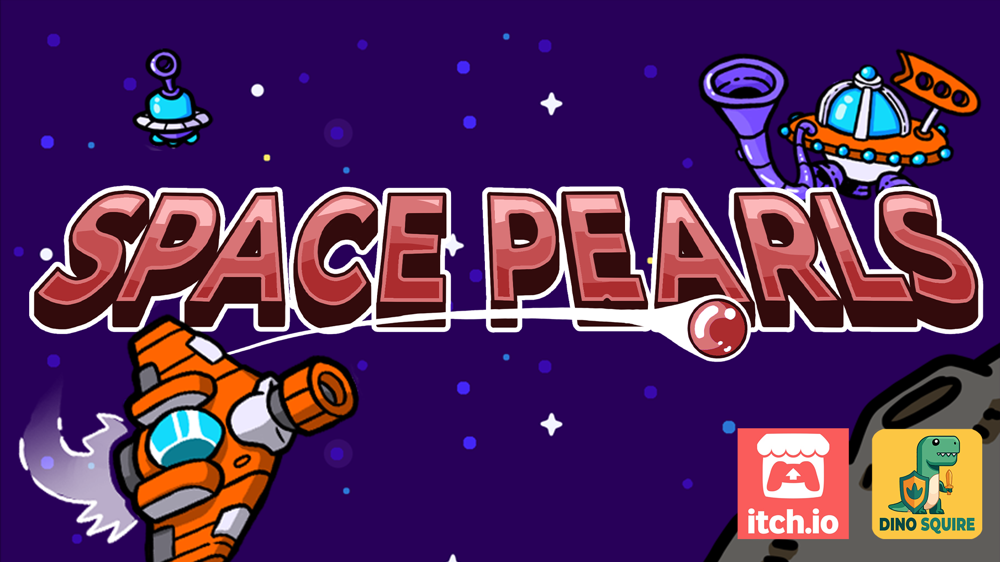
Itch.io link: https://dinosquire.itch.io/space-pearls
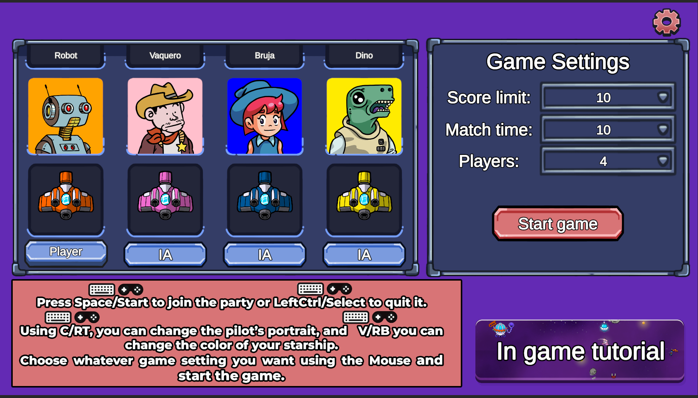
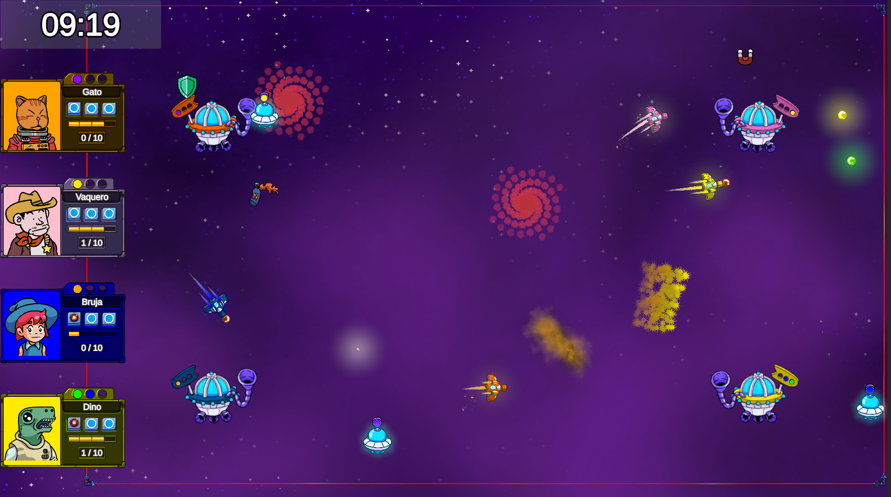
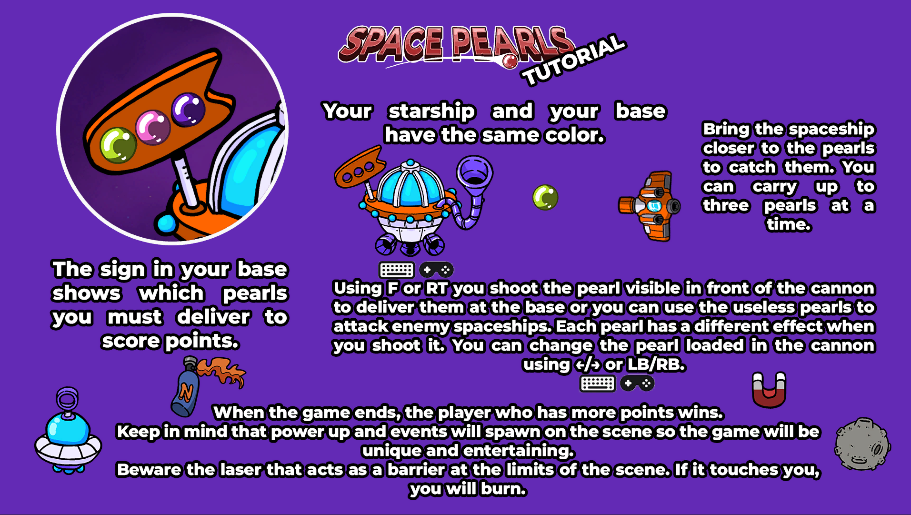
Small 2D topdown competitive up to 4 players (New and better version of Pirate Pearls)
Project Contributions:
Game designer
Sole Unity Gamedev:
- Designed the core competitive mechanics and balanced the multiplayer gameplay flow.
- Engineered the entire gameplay loop and state management utilizing UniRX for reactive, decoupled event handling.
- Implemented the Unity New Input System to support local 4-player split-input with seamless keyboard and gamepad mapping.
- Developed enemy AI behaviors leveraging 2D NavMesh
- Designed a data-driven content architecture using ScriptableObjects for powers and modular game flow events.
- Fully implemented and integrated the UI/UX responsive interface with the game's reactive data systems.
Witch and bats - Dino Squire (2024) (C# Unity)

Itch.io link: https://dinosquire.itch.io/witch-and-bats
Google Play link: https://play.google.com/store/apps/details?id=com.DinoDigital.Witchandbats


Little 2D action game.
Project Contributions (Sole Unity Gamedev):
- Designed and implemented a modular Finite State Machine (FSM) to drive boss AI behaviors and combat phases.
- Engineered the core gameplay loop.
- Structured a data-driven content pipeline using ScriptableObjects.
- Developed and fully integrated the responsive UI/UX system, including a dynamic unlockable art gallery.
- Implemented multi-language support leveraging the official Unity Localization package.
Gacha Marbles - Dino Squire (C# Unity)
MPVP 2025 (ADVA) Mentorship Selection
Itch.io link: https://dinosquire.itch.io/gacha-marbles
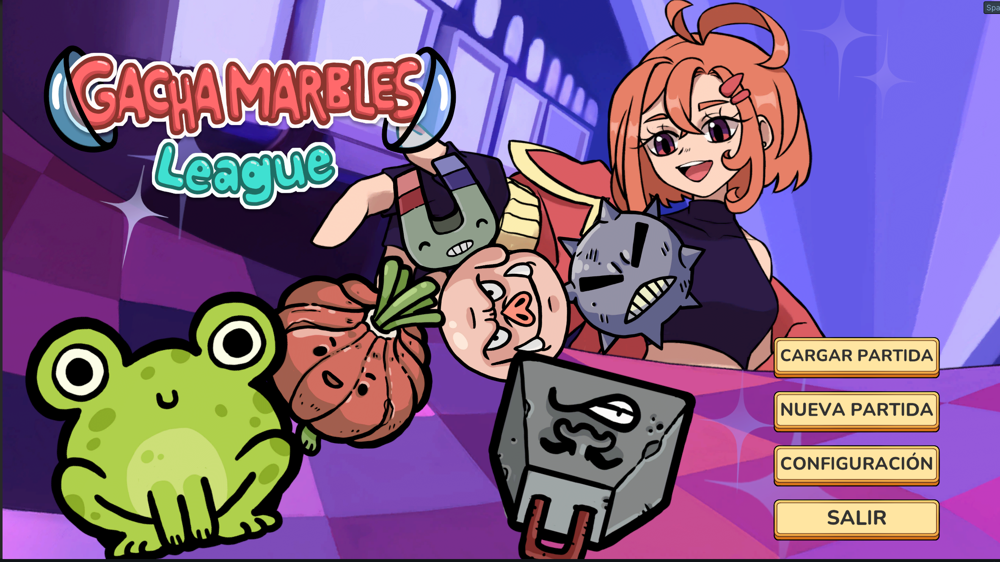
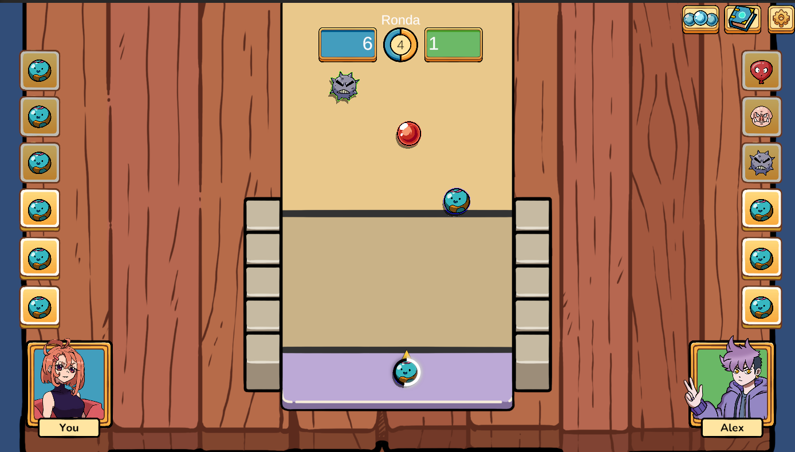
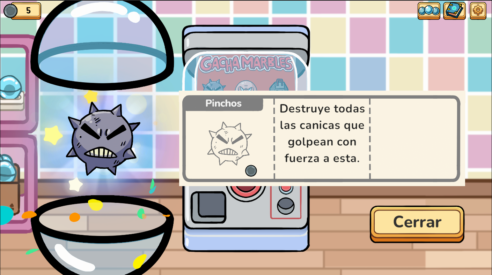
"Casual 2D battle and collection game"
-Game designer and Lead programmer-
Key Project Contributions (Unity Gamedev):
- Architected the core battle event resolution engine and state managements.
- Engineered a modular ability pipeline using ScriptableObjects and SerializeReference to drive individual marble behaviors.
- Implemented a robust local Data Persistence system for inventory, unlocks, and player collection states.
- Developed a Tooltip System featuring dynamic keyword detection on hover for enhanced player onboarding.
- Integrated a seamless Dual Grid Tile System to streamline and accelerate 2D level design and environment creation.
- Polished game feel, juice, and UI transitions by scripting tweens and feedback triggers using DOTween and Feel.
- Fully implemented the responsive user interface and integrated multi-language support via Unity Localization.
Content Creator Collaboration – Mechanics & Systems Prototyping
Channel's link: https://youtube.com/@NahuelEscu
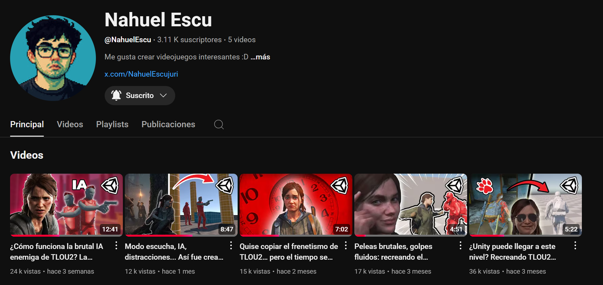
Collaborated with a game development content creator to design and engineer playable Unity prototypes inspired by iconic AAA mechanics and popular media franchises. Responsible for translating high-level design concepts into solid, production-ready technical architecture.
The Last of us 2 - mechanics prototype
- Engineered stealth-focused AI utilizing modular(FSM) for enemy alert states and patrolling behaviors.
- Implemented a dynamic, context-aware Heartbeat mechanic linked to player stealth and physical exertion.
- Developed the signature Listen Mode mechanic, leveraging raycasting and custom rendering layers for wall-penetrating enemy detection.
- Managed source control and team synchronization utilizing Unity Version Control.
Unity project: https://github.com/NahuelEscujuri/TLOU
Chainsawman - hack and slash prototype
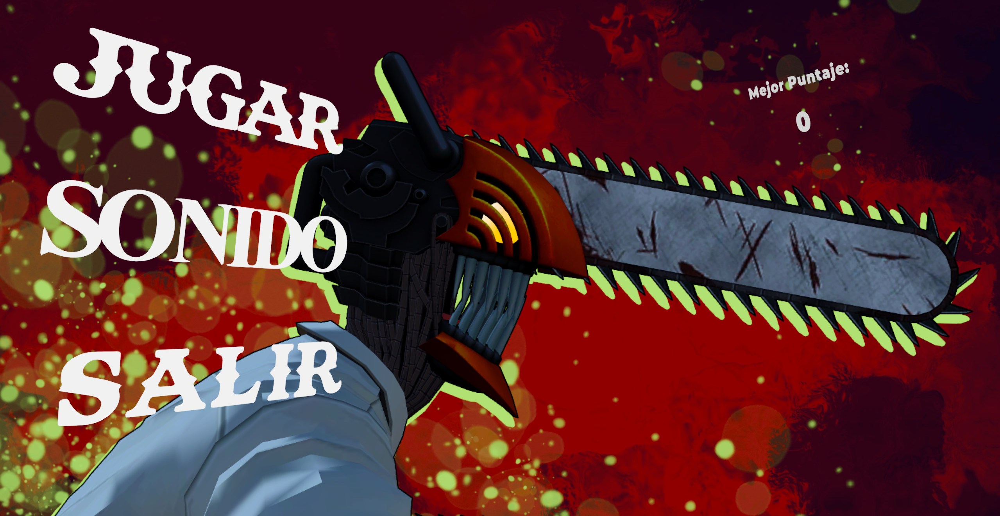
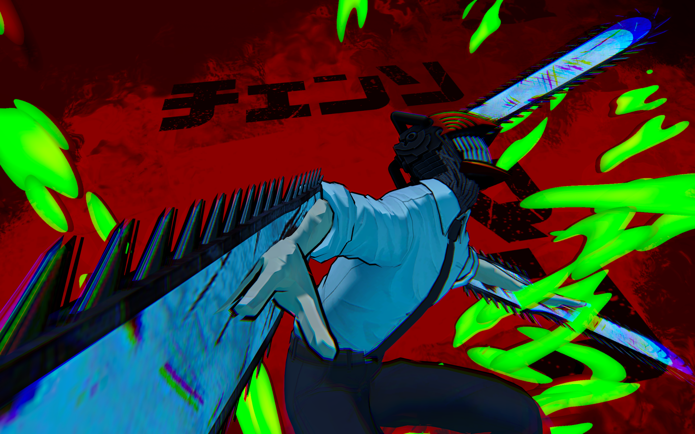
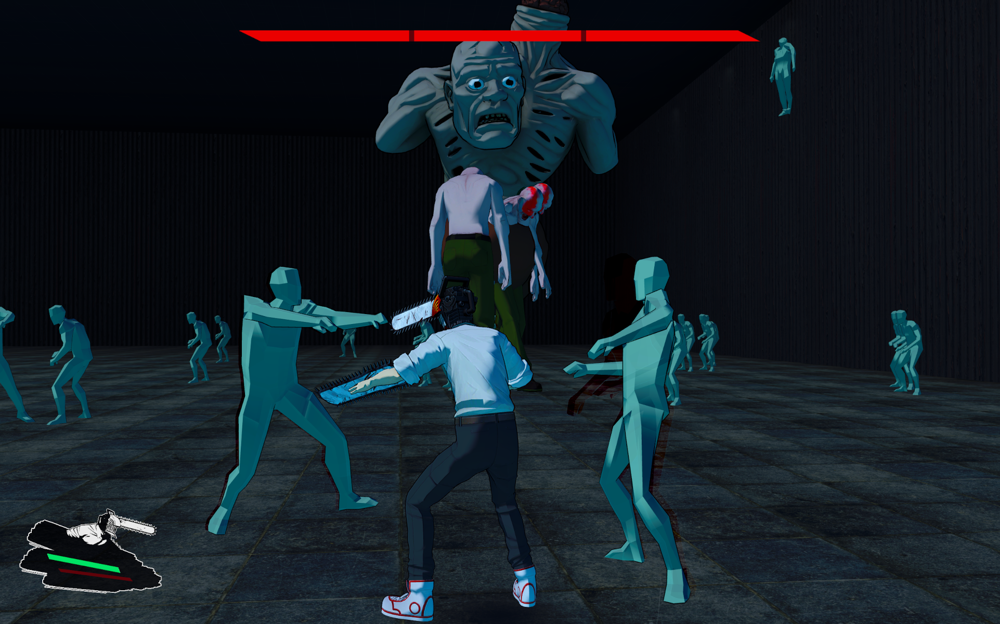
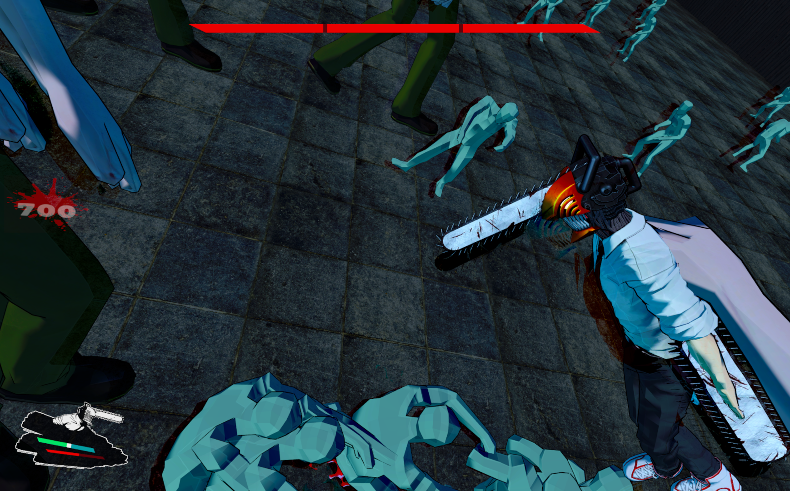
- Architected a central Battle Service Locator to decouple dependency injection and streamline runtime system management.
- Engineered a centralized Battle Bootstrapper to handle deterministic initialization of game objects, timers, and user configurations prior to gameplay.
- Designed Object Pooling systems for particle effects, audio sources, and concurrent enemy spawning.
- Developed a multi-phase Boss AI system featuring spatial behaviors, movement oscillation, dynamic minion spawning, and physics-based projectile throwing (AllyLauncher).
- Implemented a Data-Driven architecture using ScriptableObjects as Shared Values to exchange runtime state across decoupled systems without hard references.
- Established an architecture based on Event Channels via ScriptableObjects to handle scalable, decoupled communication between core gameplay systems and the UI/UX layer.
Unity project: https://github.com/OuroPrax/Chainsaw_man
Tactic RPG game - Dino Squire (C# Unity)
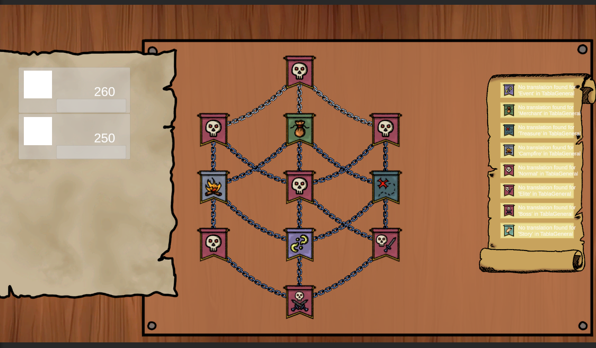
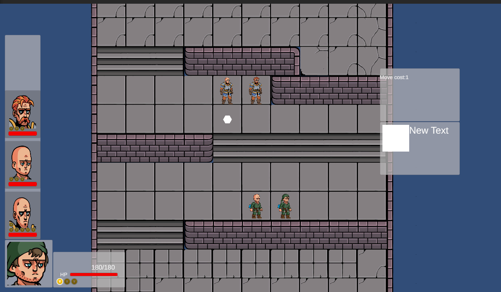
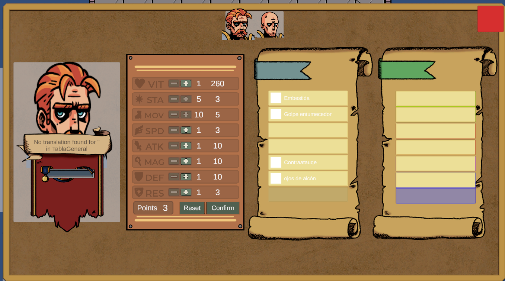
2D Turn-based tactical RPG roguelike
Project Contributions(Sole Unity Gamedev):
- Engineered the entire turn-based combat loop including a deterministic battle event resolver, progression systems, and global game state management.
- Engineered a node-based event map generation pipeline inspired by Slay the Spire, including procedurally-tailored merchant inventory pools based on active party composition.
- Implemented an RPG meta-progression system featuring dynamic character leveling, weapon selection constraints, and branching class advancements.
- Developed a highly flexible ability framework supporting modular execution for active, reactive, and passive behaviors.
- Designed a data-driven architecture using ScriptableObjects and SerializeReference for characters, abilities, weapons, and status effects.
- Built an Ability Targeting & Launch System featuring grid range calculation, custom area-of-effect (AoE) zones, and strict Line of Sight validation algorithms (applicable to both the range and AoE).
- Programmed a grid navigation and pathfinding system supporting partial movement paths and obstacle detection.
- Implemented a comprehensive local Data Persistence system.
- Implemented a Tooltip System, including dynamic hover keyword detection.
- Fully integrated the responsive UI/UX layer and managed multi-language support via Unity Localization.
The mushroom legacy (2025-2026) (C# Unity) (Concluded Collaboration)
Itch.io link: https://aysunza.itch.io/the-mushroom-legacy
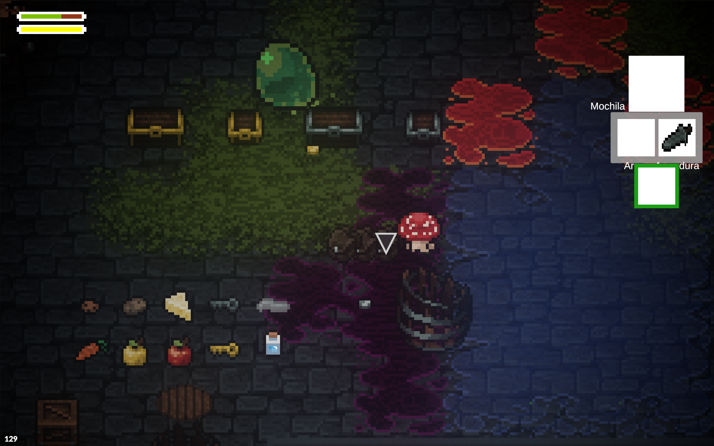


Collaborative Unity project where I was the sole Unity Dev from the beginning until March 2026.
The project started from a basic controller (MoreMountains, only running) and was scaled into a complete ecosystem of interconnected systems: stamina-based player abilities, inventory, liquids, dungeon generation, and enemy AI.
I decided to conclude my collaboration and step away from the project.
Project Contributions (Sole Unity Gamedev):
- Procedural Dungeon Generator: Created a system that generates maps using fully procedural rooms or predefined templates connected by valid doors.
- Inventory & Equipment System: Developed an inventory with mountable storage and item actions (drop, use, equip, unequip, transfer), fully integrated with equipment and item usage logic.
- Dual Grid Liquid System: Built an expansion-ready liquid simulation featuring directional flow, wall/abyss interactions, visual effects when falling, and entity/object interaction.
- Liquid Detection: Implemented a system that detects liquids under the player and entities, replacing normal movement effects (run, jump, dash) with custom particle feedback.
- Player Controller & Abilities: Programmed movement mechanics (running, jumping, dashing, pushing) governed by stamina costs and a capability-blocking logic flow.
- Object Handling & Aiming: Developed logic for grabbing, releasing, and carrying objects on the head, including a forced-throw trigger when hit or dashing, and directional aiming for throwing items with custom hit logic per item.
- Corpse Controller: Designed a system that manages dynamic bodies using modular components to execute specific actions upon generation (such as custom storage components, visual display updates, or auto-destruction timers).
- Environment Elements & Props: Programmed interactive hazards and items, including chests (unlocking, setting contents, and inventory interaction), spike traps, pushable items, collectible pushables, and barrels that release damage or liquids.
- Safe Zone Finder: Built a positioning tool to find valid, safe areas for object and prop placement.
- Abyss System: Engineered an optimized checking system for entities, objects, and liquids falling into the abyss.
- Enemy AI & Slime Logic: Implemented enemy pathfinding for patrolling, chasing, and attacking states, alongside a special slime behavior that handles division on death, item absorption, and movement logic to actively avoid non-slime liquids.
- Status Effects: Developed a status effects logic applicable to both the player and external entities.
- Game Feel & Juicing: Polished game feel, visual feedback, by scripting smooth tweens and feedback triggers using DOTween and Feel (More Mountains).
Turf Wars Rabbits - White Beach Studio (2025) (C# Unity) (Project Cancelled)
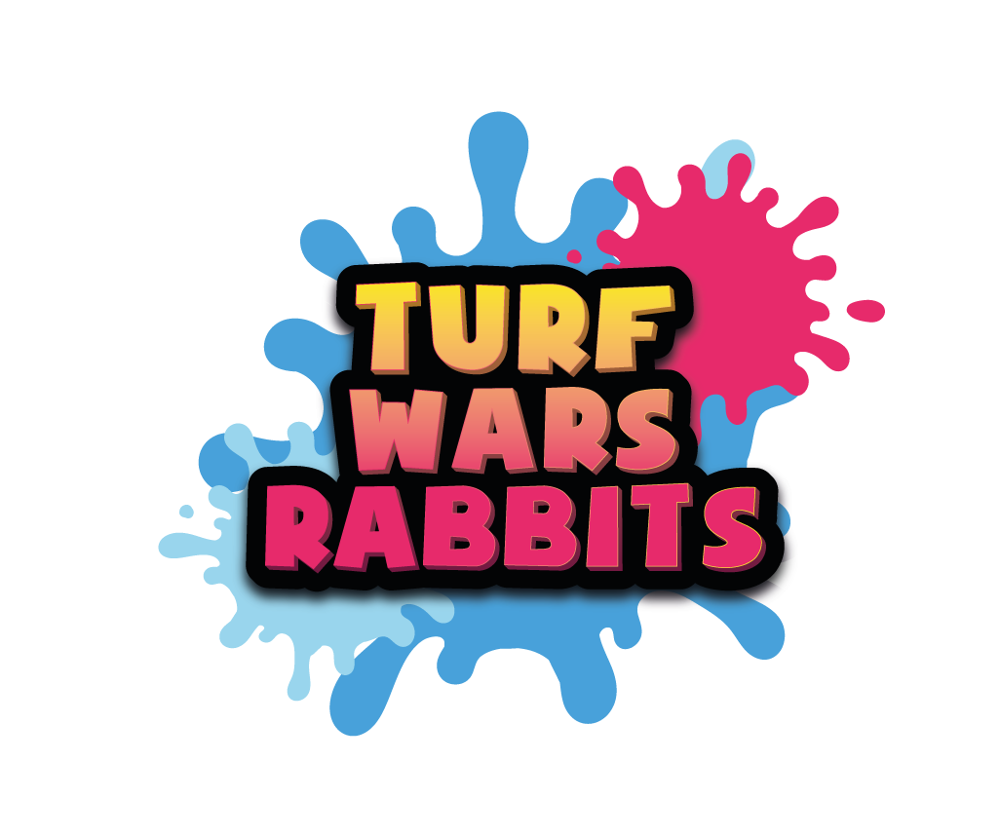

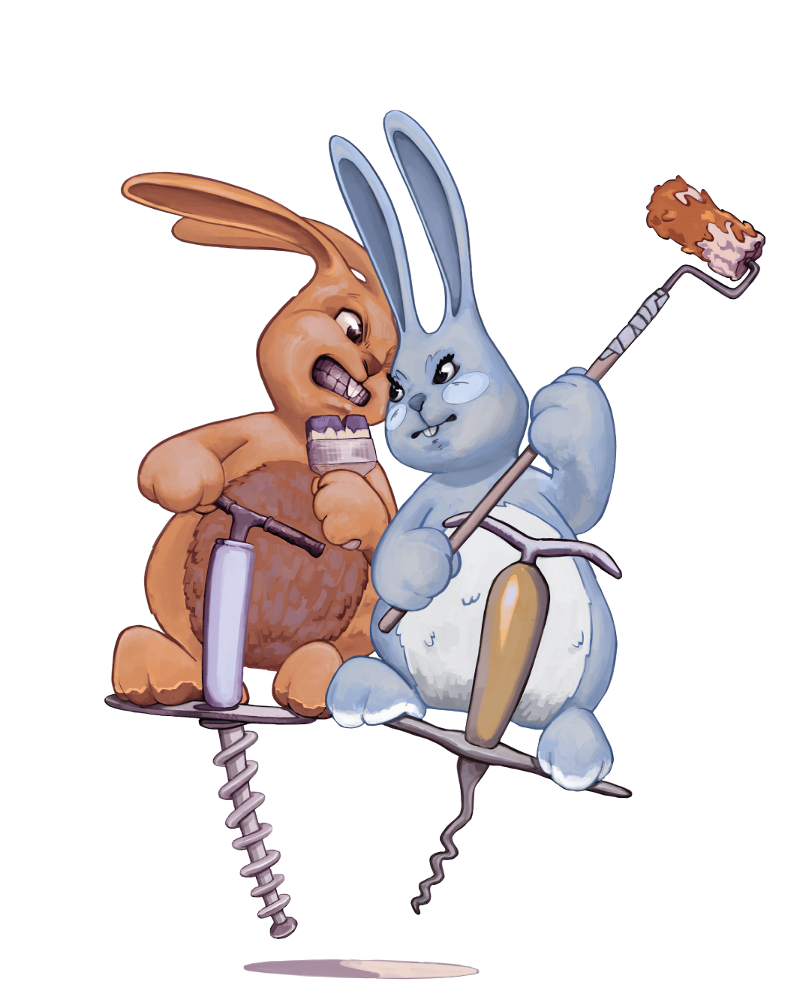
Multiplayer party game for 2–4 players. I contributed as programmer, implementing power-ups, UI, and responsive feedback using MoreMountains Feel. The project was cancelled by studio decision.
Project Contributions (Unity Gamedev):
- Implemented some powerups.
- Integrated Feel (MoreMountains) for responsive feedback and polished player experience
- Implementation of UIs
Shadow over Innsmouth - Studio Sabi (C# Unity) (Project Cancelled)
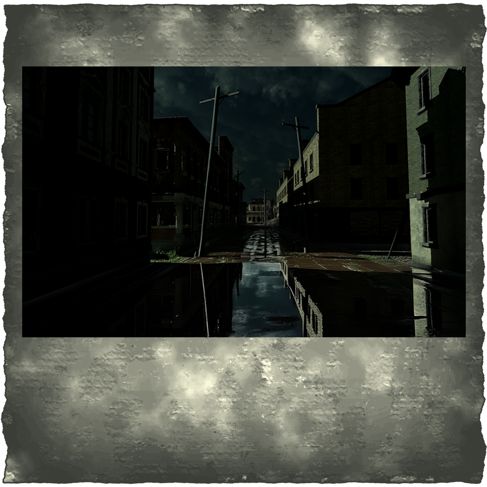
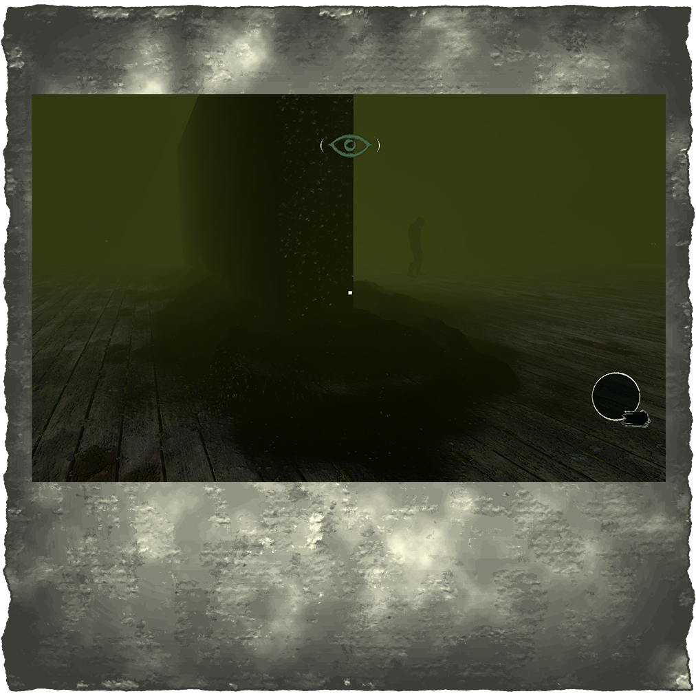
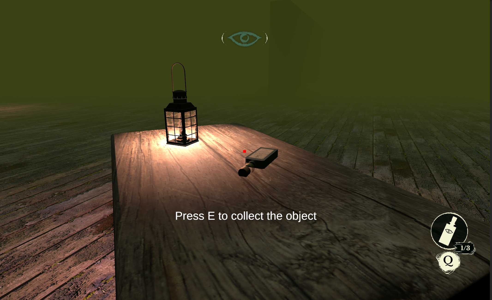
Stealth-based horror game inspired by H.P. Lovecraft. I programmed game flow, AI state machine, stealth mechanics, and sanity effects. The project was cancelled during its prototype stage (2024)
Project Contributions (Unity Gamedev):
- Engineered the core game loop, global game flow programming, and general state management.
- Developed a custom AI State Machine to handle enemy behaviors, patrolling paths, and dynamic combat investigation.
- Programmed an AI Detection & Stealth System, implementing vision/hearing sensing cones and alert screaming mechanics to signal nearby threats.
- Designed integrated Sanity & Stamina core player statistics.
- Coded dynamic environmental feedback based on player sanity levels, triggering screen shakes, contextual audio noises, and real-time post-processing effects.
- Implemented a surface-aware Footstep Audio System that dynamically changes sound effects depending on the material type the player walks on.
- Leveraged ScriptableObjects to manage modular data architecture.
- Fully integrated the responsive user interface (UI) and managed multi-language support via Unity Localization.
Cars battle game (2024) (C# Unity) (Concluded Collaboration)
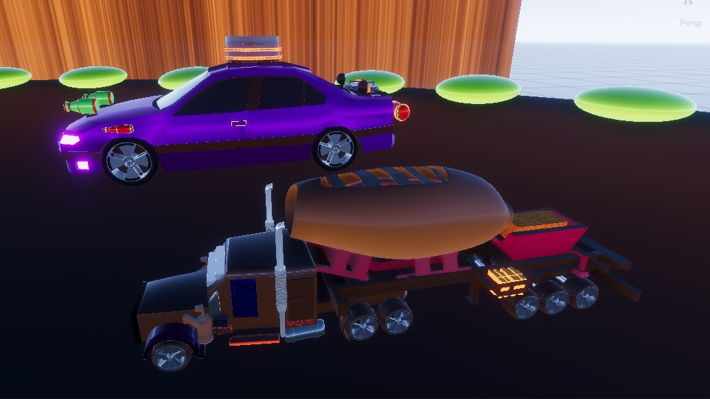
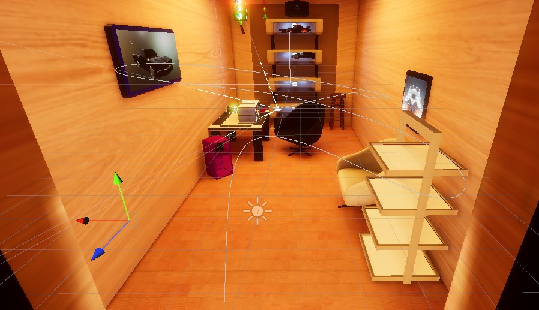
A fast-paced vehicular combat game featuring split-screen multiplayer, interactive arenas, and dynamic weapon mechanics.
Project Contributions(Unity Gamedev):
- Implemented multiplayer local integration utilizing the new Unity Input System configured for split-screen gameplay.
- Configured dynamic multi-camera tracking per player leveraging Cinemachine virtual camera structures.
- Programmed modular gameplay logic for vehicle-specific weapons, offensive powers, and unique special abilities.
- Engineered environment control structures and interactive arena events, including jump platforms, explosive hazards, and dynamic stage elements.
Don´t lose your Sanity (2024) (C# Unity) (Project Cancelled)
A multiplayer party game inspired by social deduction mechanics. Players take on unique characters with special abilities: some must complete missions across the map, while others secretly act as impostors, trying to eliminate the rest without being discovered. The project was cancelled in its early stages
Project Contributions(Unity Gamedev):
- Integrated core gameplay mechanics with Photon Unity Networking (PUN), ensuring synchronized multiplayer interactions and state replication across clients.
- Designed and programmed unique character abilities, handling networked activation, custom animations, and cross-client gameplay effects.
- Developed a synchronized Inventory & Item Flow System for managing items that players could collect, hold, use, or swap in active hand states over the network.
- Collaborated on technical documentation, system design, and early architecture prototyping before project cancellation.
Overcooked like game - Condor Entertainment (2024) (C# Unity) (Project Cancelled)
A multiplayer party game inspired by Overcooked, where each character would have unique skills and stats. The project was cancelled in its early stages.
Project Contributions (Unity Gamedev):
- Designed the initial data and technical architecture for character skills and player stats.
- Collaborated on early technical prototyping, systems documentation, and design specifications before project cancellation.

Pirate pearls (C# Unity)
Itch.io link: https://reyndev.itch.io/pirate-pearls
Github link: https://github.com/ReyNicolas/PearlsPirates


Small 2D topdown competitive up to 4 players
Feature keys:
- Designed the core competitive mechanics and balanced the multiplayer gameplay flow.
- Engineered the entire gameplay loop and state management utilizing UniRX for reactive, decoupled event handling.
- Implemented the Unity New Input System to support local 4-player split-input with seamless keyboard and gamepad mapping.
- Developed enemy AI behaviors leveraging 2D NavMesh
- Designed a data-driven content architecture using ScriptableObjects for powers and modular game flow events.
- Fully implemented and integrated the UI/UX responsive interface with the game's reactive data systems.

Until death (C# Unity)
Itch.io link: https://reyndev.itch.io/until-death
Github link: https://github.com/ReyNicolas/Beat-em-up


Small 2D topdown survivor game
Feature keys:
- Developed the entire game framework, including asynchronous game loops, wave timers, and event-driven data streams leveraging UniRx (Reactive Extensions for Unity).
- Architected a data-driven system using ScriptableObjects to independently manage enemy wave configurations, spawn rules, and player statistics.
- Programmed the core combat mechanics, enemy spawning pipeline, top-down player locomotion, and real-time UI updates via reactive property bindings.
Topic twister (Quark Academy - Unity Engine final project)
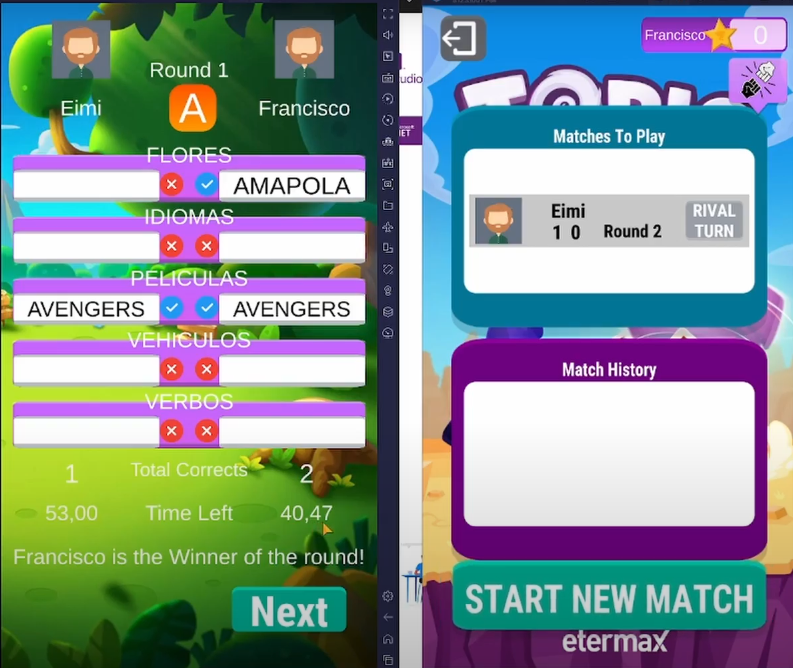
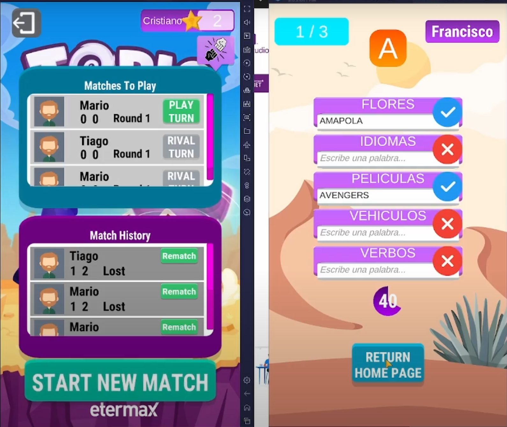
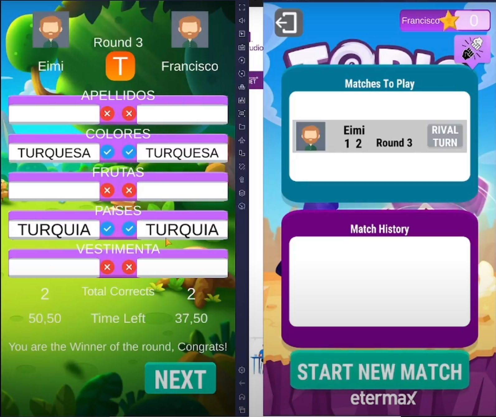
Unity trivia game showcasing microservices architecture. Clean Architecture. TDD
Links
Tools Used
- IntelliJ IDEA version: 2023.1.3
- Kotlin
- Ktor
- JUnit
- Mockito
- Firebase Firestore
Methodologies Used
- Clean Architecture
- Pair programming
- TDD
About Me
I am a Game Programmer specialized in technical architecture, data-driven design, and decoupled systems. I thrive on solving the intricate challenges behind multiplayer mechanics, advanced AI behaviors, and physics-based interactions. My focus is on turning complex design documents into clean, event-driven C# code, prioritizing scalable structures that allow game prototypes to grow seamlessly into polished products.
Contact
Email: rey.nicolas.92@gmail.com
LinkedIn: linkedin.com/in/reynicolasesteban
Github: https://github.com/ReyNicolas
Itch.io: https://reyndev.itch.io